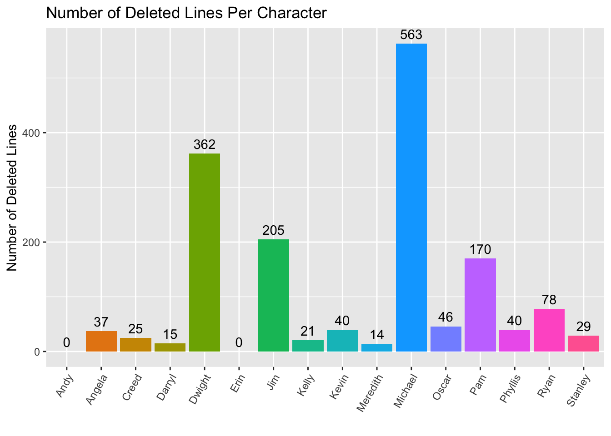
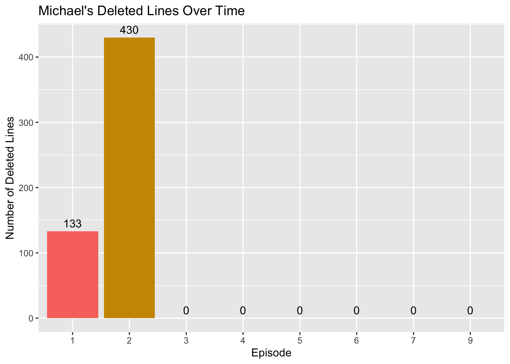

Main Character Journeys
Another interesting aspect of these data that we explored is the frequency at which each character’s lines are deleted. The number of deleted lines varies wildly amongst the main cast.

Michael Scott, Regional Manager and self-appointed office court jester, has the most deleted lines: 563 during his time on the show. Dwight Schrute–with the second highest number of deleted–is more than 200 deleted lines behind Micheal at 362, even though Michael left the show at the end of season seven and Dwight stayed for the entire run. Perhaps looking at Michael’s deleted lines over the course of the series will help figure out why he has so many.
Michael Scott’s Story
Michael Scott, the beloved boss of the Scranton branch of Dunder Mifflin Paper Products, has been on a journey. From making crude remarks behind other office workers’ backs to accidentally promising to fund the college education of an entire class of kindergarteners, Michael has clearly been on a roller coaster of a character arc. After his unpleasant personality got poor ratings by audiences after the first season, the script writers on The Office (US) decided to revamp Michael’s character from a rude and offensive asshole to a lovable but often misguided regional manager who everyone could relate to at one point or another.
To analyze the more concrete changes Michael Scott went through, we can plot the number of Michael Scott’s lines that got deleted from the original script by episode and colored by season.
